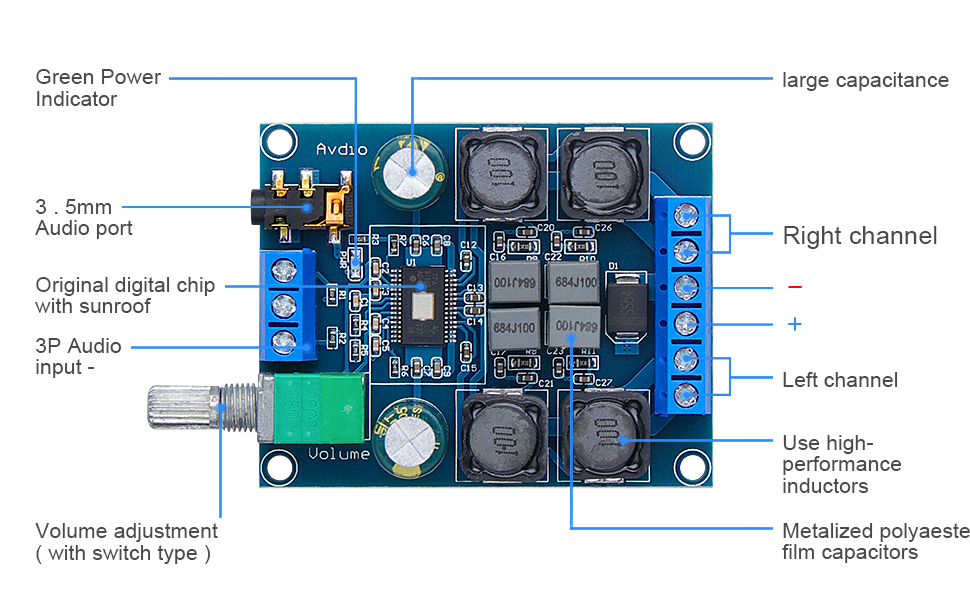

cannibal pac―man Build
introduction
Pac-Man Battle Royale (aka Cannibal Pac-Man) is an arcade game that was released in arcades by Namco, the original creators of Pac-Man, in 2011.
It was originally arcade-only, but was eventually released for PC in the Pac-Man Collection. This build uses a modded version of that official PC release, in combination with a wood/MDF enclosure and standard x86 PC hardware to recreate the arcade experience faithfully, but miniaturized.
The 3D models used in this build are based around a 23.6" IPS LCD panel that can be found in any small old TV or LCD computer monitor. a 23.6 inch display is 3/4 scale of the original.
All 3D models for 3D prints and the cabinet itself can be found at this github link.↗
supplies and parts list
In addition to the standard electronics and woodworking tools, you will need the parts listed below.
- Power
- IEC C14 to NEMA 5-15R adapter
- Power strip
- Display power supply
- Computer power supply
- Audio amplifier power supply
- DC Fan
- Molex connector
- Copper wire
- Computer/digital parts
- Intel NUC or similar mini PC
- USB hub - at least 4 ports
- USB joystick driver boards
- wireless USB keyboard and touchpad combo (Bluetooth is nice for wireless)
- A/V components
- LCD panel
- LCD driver board
- Video/audio cable
- Good quality self-enclosed speakers (can salvage from old TV, ported enclosures will sound better)
- CCFL to LED backlight mod kit (optional)
- Modified TPA3116D2 amplifier board
- Auxiliary cable
- Controls
- 4x arcade button
- 4x Joystick
- Mounting/assembly
- 3 pieces 24" by 48" plywood or MDF
- Wood screws
- Machine screws
- Circuit board plastic (nylon) standoffs
- Nuts and bolts (or machine screws) for joystick mounting
- 3D-printed power supply mounting brackets
- Velcro One-wrap strips for mounting power supply
- Rubber feet
- Plywood or MDF for cabinet
- Wood glue
- Clear plastic sheet to cover LCD - Lexan (polycarbonate) recommended
- Screw-on nylon cable clamps (3/8" or 10mm recommended)
- 2x utility hinge
- 2x chest latches
- Yellow cloth for speaker grilles
- Aluminum chain-link fence ties
- Design/art
- Decals/labels
- Yellow paint
wiring and electronics
The block diagram contains all connections that need to be made to assemble this machine.
Several of the components will need to be modified in some way such as soldering on extra connectors. There are also various components that will need to be assembled via soldering.
block diagram

Click to open sources in new tab or to view larger image
modified components
-
audio amplifier board
The specific board that I used for this project is a TPA3116D2 board that has a volume control knob, 3.5mm line in jack, and screw terminals for the inputs and outputs.
Click to view full-size image
The reason I chose this board is because the heatsink that is provided does not come pre-installed. This means you can get a good look at the chip to make sure it is not a fake TPA3116D2, which are rampant among these kinds of boards. Make sure you get a real TPA3116D2 because the fakes have significantly worse signal-to-noise ratios and power outputs. This board can easily be identified because it has the word "Audio" on the top-left corner, but the manufacturer made a typo so it actually reads "Avdio".
To get this board to work for the arcade machine, you'll need to desolder the potentiometer and power switch combo. In its place, solder 3 jumper wires, one shorting the power switch pins and the other 2 shorting the pins from the center to the positive tap of the potentiometer. These wires will ensure the power is always on so it can be switched from the power strip and that the volume is all the way up.
-
lcd driver board
There are many different kinds of LCD driver boards, so depending on what LCD you are using, this step will be different. All that needs to happen is that you tap into the 12v supply of the board to make an output for the fan.
It is not recommended to use the audio power supply for the fans because the fans can introduce noise into the audio signal.
{kind=link}
mechanical assembly
cabinet
The main piece that needs assembly is the outer cabinet that can be made of wood or MDF. This cabinet has been designed to just barely fit onto a piece of 24" by 48" plywood, 1/2 inch thick, so I recommend to buy 3, just in case.
I used plywood to make my cabinet. The main advantage is strength, however the grain can show through the paint. MDF can also be used, but if any water is spilled, the MDF is essentially ruined. It is also slightly weaker than plywood.
The hinges and latches are used to make the machine open like a book. This will be useful for servicing the cabinet. They can be installed on the long sides of the cabinet where it splits into 2 compartments.
The 3D model and dimensions for the wood can be found in the GitHub link at the top of this page in the introduction section.
Once you've finished building the cabinet, you can go ahead and paint it yellow. This will make it look fairly similar to the original arcade machine.
plastic sheet
A clear plastic sheet can be used to cover the display. It is not required, but very highly recommended because the LCD dispays are quite fragile.
I used a Lexan (polycarbonate) sheet for this purpose because it is easy to work with when using standard tools and much less brittle than acrylic. However, if you have a laser cutter, you may find it easier to use acrylic.
electronics mounting
The wood cabinet has 2 compartments. The top compartment is for the LCD and supporting components like the driver board, and the controls. The bottom compartment is essentially for everything else.
All the components have been selected with mountability in mind. The nylon standoffs can be installed into the wood, and then used to mount any PCBs that need to be mounted. My Intel NUC came with a VESA bracket that I repurposed to use for mounting to the wood. Anything else that cannot be mounted traditionally can be mounted using this tutorial↗ from the 8-bit guy.
software
Now that we have a fully assembled cabinet, let's get onto the part that makes this whole thing come together, the software!
The first piece of software you'll need is the game itself. While you cannot get just Pac-Man Battle Royale, you can get Pac-Man Collection, which includes it. However, a mod needs to be installed to remove some excess menu items and that sort of thing. The mod can be found at this GitHub link↗.
Once you have set up the game and it is running properly, you need to configure X360CE. This software is annoying to use, but I'll try to give a simple overview of everything you need to do.
The first thing you need to do when you plug in your joystick adapter boards is to go into X360CE on each controller and press Clear. You can access each controller using the tabs near the top of the dialog. If you get any dialog asking you to download configuration profiles when you start up X360CE, just press cancel as we don't need them.
Next, we need to map the controls. Since our joysticks have 4 directional buttons, you can map them to the D-pad. To do this, for each controller, click on the dropdown next to a D-pad direction and click Record. Repeat this step for each of the joystick buttons.
Configuring the buttons is very similar to the joysticks. For each of the 4 buttons, do the same procedure as the joysticks but configure the A button instead of the D-pad.
The next required piece of software you'll have to write yourself, but it is super simple. All it is is a batch script that will run on startup of the PC, which launches the game. You may also want to launch some sort of intro video as well. This script can be put in the startup folder of your Windows user.
The last piece of software you need is already built into Windows. Open a command prompt, and run the command netplwiz. Once the dialog shows up, uncheck the option Users must enter a username and password to use this computer. Next, click on the user account you have configured to autostart the game. Then, click OK. And your software setup is complete!
conclusion
If you've read this far, you've hopefully completed the guide and have a working arcade machine!! I hope you've had fun making it, I sure did! However, if you have any issues, make sure to check the troubleshooting section below.
troubleshooting
The main software I had trouble with was X360CE. The inputs kept getting randomly swapped, and then I had to redo the whole configuration. I solved this issue by swapping out my wireless mouse and keyboard combo, for some reason it was showing up in the Windows joystick configuration in the control panel.
The other software I had trouble with was the batch script. But after I read some tutorials online about how it worked, I was able to get it working.